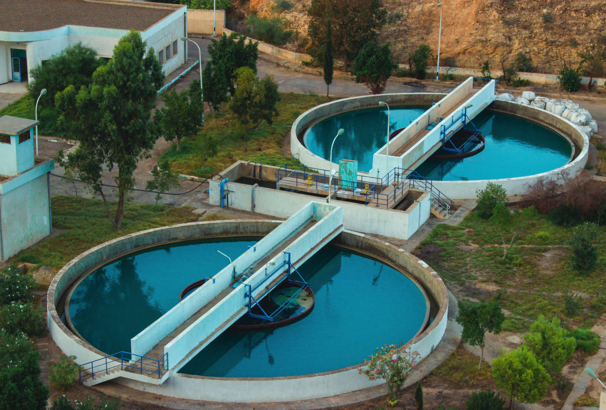

AQUASHIELD
Monitoramento preventivo da infraestrutura computacional em sistemas de abastecimento de água.
MONITORE. IDENTIFIQUE. PREVINA.
Conheça a soluçãoSOBRE NÓS
O AQUASHIELD é uma solução de software distribuída em arquitetura Client/Web, desenvolvida para a observabilidade e garantia de disponibilidade da infraestrutura computacional em Estações de Tratamento e Abastecimento de Água (ETA). A plataforma combina um agente local (Client) responsável pela extração contínua de telemetria do sistema operacional — como métricas de CPU, memória RAM, armazenamento e temperatura — com uma aplicação Web centralizada. Essa estrutura permite correlacionar dados do hardware, identificar desvios comportamentais e alertar sobre potenciais gargalos antes que causem a indisponibilidade dos sistemas de supervisão e controle (SCADA/IHM).


Por que queremos enfrentar este problema?
O tratamento e o abastecimento de água dependem da estabilidade dos sistemas computacionais utilizados na supervisão das bombas nas Estações de Tratamento de Água. Quando o computador responsável pela supervisão apresenta lentidão, superaquecimento ou falhas de hardware, a equipe pode perder a visibilidade das condições da operação, dificultando a identificação de problemas e a tomada de decisões.
Queremos enfrentar este problema para prevenir que falhas no hardware desses computadores se transformem em incidentes operacionais. Com o monitoramento contínuo de componentes como CPU, memória RAM, armazenamento e dispositivos USB, buscamos contribuir para uma infraestrutura mais estável e confiável, permitindo que os profissionais responsáveis pela operação atuem de forma mais rápida e segura.
Qual o problema que enfrentamos?
Nas Estações de Tratamento de Água, computadores utilizados na supervisão das bombas precisam funcionar de forma adequada para garantir o acompanhamento contínuo da operação. Problemas no hardware, como alto uso da CPU e memória, temperaturas elevadas, falta de espaço em disco ou falhas em dispositivos USB, podem comprometer o desempenho do sistema de supervisão. Sem um monitoramento contínuo, essas alterações podem ser identificadas tardiamente, dificultando a prevenção de incidentes.


O que monitoramos?
O AquaShield monitora os principais componentes de hardware dos computadores utilizados na supervisão industrial, acompanhando informações de CPU, memória RAM, armazenamento e dispositivos USB. Com dados atualizados em tempo real, a plataforma facilita a identificação de alterações no desempenho e possíveis situações de risco.
COMPONENTES QUE MONITORAMOS


Monitoramento em tempo real
As informações coletadas são apresentadas em uma dashboard, permitindo acompanhar o desempenho dos computadores das ETAs de forma rápida e clara. A plataforma apresenta os principais indicadores de hardware, facilitando a identificação de alterações no desempenho e possíveis situações de risco.


Alertas inteligentes
Quando uma métrica apresenta uma condição fora dos parâmetros definidos, o sistema gera alertas automaticamente, sinalizando a situação e sua prioridade. Dessa forma, os responsáveis conseguem identificar problemas com mais rapidez, acompanhar sua evolução e tomar providências antes que uma falha comprometa a supervisão da operação.
INTERESSOU-SE?
Faça seu cadastro